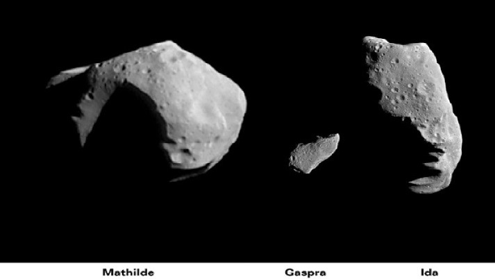

ASTEROİT NEDİR?
Asteroit, Meteorit, Meteor, Kuyruklu Yıldız Nedir?
Asteroit Kuşağı Mars ve Jüpiter arasında, belirli bir yörüngede dolanan, çeşitli büyüklük ve şekildeki kaya ve metal parçalarıdır.
Göktaşı
Asteroit ya da kuyruklu yıldız gibi çeşitli gök cisimlerinden kopmuş küçük kaya parçalarıdır.
Meteor
Atmosfere giren gök taşlarıdır.
Meteorit
Dünya’nın atmosferine girdikten sonra tamamen yanarak yok olmadan yeryüzüne ulaşıp yere düşen gök taşlarıdır.
Kuyruklu Yıldızlar
Buz, toz ve kayalık parçacıklardan oluşan asteroit benzeri gök cisimleridir. Sanılanın aksine "yıldız" değillerdir.
Meteor Yağmurları
Gökyüzünün belirli bir bölgesinden geliyormuşçasına yoğun bir göktaşı etkinliği görülür. Bunun
nedeni, Yer'in yörüngesi ile bir kuyrukluyıldızın yörüngesinin kesişmesidir. Kuyrukluyıldızın
yörüngesindeki kalıntılar, Yer'in çekimi etkisiyle atmosferimize girerler. Bu da belirli dönemlerde bir
göktaşı yağmuru olarak görülür, böylece meteor yağmuru adı verilen olay gerçekleşmiş olur.
ASTEROİT NEDİR?
Asteroitler Güneş’in etrafında dolanan küçük ve taş benzeri gök cisimleridir. Asteroitler gezegenler
gibi Güneş’in etrafında dolansa da gezegenlerden daha
küçüklerdir. Güneş Sistemimizde birçok asteroit vardır ve bunların birçoğu Mars ve Jüpiter arasında yer alan
asteroit kuşağında bulunur. Asteroitler ayrıca gezegenlerin yörüngelerinde de bulunurlar ve
yörüngelerinde bulundukları gezegenlerle beraber Güneş’in etrafında dolanırlar. Dünya ve birkaç
gezegenin yörüngelerinde böyle asteroitler vardır.
Ida Asteroit’inin NASA Galileo uzay aracı ile çekilmiş bir görüntüsü
Asteroitler nerden geliyor?
Asteroitler Güneş Sistemimizin oluşumundan arta kalanlardır. Güneş Sistemimiz 4.6 milyar yıl önce
büyük bir gaz ve toz bulutunun birleşmesi ile oluştu. Bu olay gerçekleştiğinde materyallerin
birçoğu bu gaz ve toz bulutun merkezine geldi ve Güneş’i oluşturdu. Diğer gazlardan bazılar
gezegenleri meydana getirdi. Fakat asteroit kuşağındaki materyallerin, gezegen oluşturan
materyallerle birleşme fırsatı olmadı.
Ayrıca hiçbir asteroit aynı şekil ve boyutta değildir. Bunun sebebi asteroitlerin Güneş’ten değişik
uzaklıklarda oluşmalarıdır. Asteroitler, yuvarlak olmayan düzensiz şekilleri, boyutları (kimleri
kilometrelerce çapa sahiptir, kimileri bir çakıl taşı kadar küçüktür) ve meydana geldiği materyalleri
(nikel, demir gibi metaller ve kil) ile birbirinden ayrılırlar.

(Kaynak:NASA) Peki asteroitler bize ne öğretebilir? Asteroitler, Güneş Sistemimizdeki diğer gök cisimleri ile aynı
zamanda oluştukları için bilim insanları, bu cisimleri inceleyerek Güneş Sistemimizin geçmişi
hakkında bilgi sahibi olabilirler. Bilim insanları, asteroitler hakkındaki bilgileri de meteoritleri
inceleyerek elde ederler. Meteorlar, atmosferimize girerek Dünya’ya düşmüş küçük asteroit
parçalarıdır. Kaynak: NASA